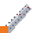
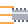
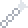
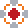

- +8% melee damage.
- Melee hits drink your enemies' blood and heal you a little.
- Once every 5 minutes, Pochita saves you from a lethal hit and brings you back at half health.
- You must wear it to use any Starter Cord.
"Pochita... I'll be your heart."
Wear Pochita's Heart, pull a Starter Cord, and you become the Chainsaw Devil. There are three cords, and each tier is a stronger form that unlocks more abilities.
"Pochita... I'll be your heart."
Use a cord to transform, and use it again to turn back. The form never runs out and has no cooldown. It also ends if you right-click the buff or die. Every tier also gives higher jumps, immunity to knockback and fall damage, and much stronger blood healing than Pochita's Heart alone.
| Cord | Melee dmg | Melee speed | Melee crit | Defense | Dmg reduction | Regen | Move speed |
|---|---|---|---|---|---|---|---|
 Starter Cord (tier 1) Starter Cord (tier 1) | +70% | +30% | +10% | +25 | 15% | +6 HP/s | +40% |
 Revved Starter Cord (tier 2) Revved Starter Cord (tier 2) | +120% | +45% | +20% | +50 | 25% | +12 HP/s | +60% |
 Hero of Hell's Cord (tier 3) Hero of Hell's Cord (tier 3) | +200% | +60% | +30% | +80 | 35% | +20 HP/s | +80% |
| Cord | Recipe | Other source |
|---|---|---|
| Starter Cord | 10 Rope, 3 Iron/Lead Bar @ Anvil | None |
| Revved Starter Cord | Starter Cord, 10 Hallowed Bar, 5 each Soul of Might/Fright/Sight @ Mythril/Orichalcum Anvil | Bat Devil (25%) |
| Hero of Hell's Cord | Revved Starter Cord, 10 Luminite Bar, 15 Solar Fragment @ Ancient Manipulator | Makima (33%) |
With the Hero of Hell's Cord you turn into the Hero of Hell, which has its own sprite sheet. See Form sprites.
While you're transformed, ability items go into your first empty inventory slots, hotbar first. They disappear when you turn back, if you switch to a lower-tier cord, or if you drop them. If your inventory is full you won't get them until you free up slots.
Damaging abilities scale like the Chainsaw Arm: they gain the same progression bonus and the same form multiplier.
| Ability | Tier | Base dmg | What it does |
|---|---|---|---|
 Chainsaw Slash | 1+ | 55 | Huge, fast melee swings with your arm chainsaws. Lowers enemy defense. |
 Rev Dash | 1+ | 70 | Dash toward the cursor, damaging everything you pass through. Brief invincibility, no fall damage. |
| Blood Drink | 1+ | None | Heal 30% of your max health. 20 second cooldown. |
 Chain Hook | 2+ | 60 | Fire a chain that pulls you to the enemy or block it hits. |
 Chainsaw Storm | 3 | 50 each | Four chainsaw blades orbit you for 6 seconds. |
A held chainsaw that inflicts Ichor (lower defense) and On Fire, and cuts down trees. "Rip and tear."
| After you defeat | Extra base damage | Total, with everything above beaten |
|---|---|---|
| Skeletron | +15 | 60 |
| Wall of Flesh | +30 | 90 |
| Any mechanical boss | +30 | 120 |
| Plantera | +40 | 160 |
| Moon Lord | +80 | 240 |
In Chainsaw Devil form the Chainsaw Arm deals 2x damage with the Starter Cord, 3.5x with the Revved Starter Cord and 5x with the Hero of Hell's Cord. The same bonuses apply to the Chainsaw Devil abilities.
While you're transformed, your character is drawn as an animated sprite instead of the normal player body. It switches between idle, walk, run, jump, crouch, hurt and 8 attack animations (5 on the ground and 3 in the air), picking a random attack each swing. Held items, wings, mounts and debuff effects are still drawn on top. Pick an animation below to preview it.
Includes an extra chain attack.